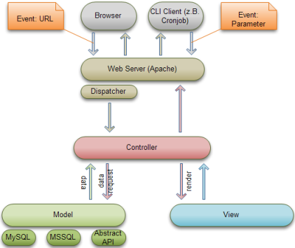
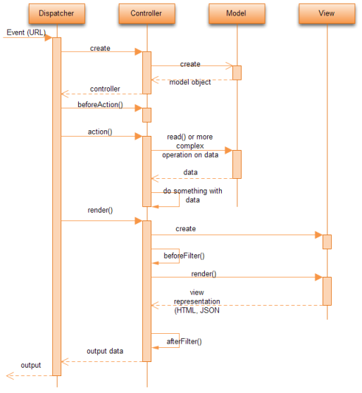

Warning!
NEVER modify anything inside the lib/-folder, or on the next kata-update your whole application will break!top
What is kata?
Kata is a fast, simple, passive, event based MVC Framework for PHP5. It runs on Windows and Linux.Preparations for kata:
•
Setup linux: http://codeninja.de/kata_php_framework/#installation•
Setup Eclipse: http://codeninja.de/kata_php_framework/#eclipseWhat MVC actually does:
 //TODO: cli does not use apache
(Some) used Patterns:
•
Objectpool: http://en.wikipedia.org/wiki/Object_pooltop
Flowchart, for techies
top
Hello World
Put the following code into the file controllers/main_controller.php:
class MainController extends AppController { function index() { $this->setPageTitle('My first view title'); } }
Now put the following code into the file views/main/index.thtml:
Hello World! <? echo ' ...And hello again!'; ?>
And finally put the following code into the file views/layouts/default.thtml:
<html> <head> <title><?=$title_for_layout?></title> </head> <body> <!-- this is where kata injects the html of a view: --> <?=$content_for_layout?> </body> </html>
If you now call http://localhost/ (presuming you have kata installed directly into your apache webroot) you will see the following output:
<html> <head> <title>My first view title</title> </head> <body> <!-- this is where kata injects the html of a view: --> Hello World! ...And hello again! </body> </html>
You can also call http://localhost/main or http://localhost/main/index because main is the default controller, and index is the default action (which can be changed, see #defaultaction
Note: If you append parameters to your url you can't omit controller or action-name. For example for http://localhost/123 kata will search for a controller named 123. Likewise if you use http://localhost/main/123 kata will search for a method named 123 inside the main-controller.
top
What happens when i request http://myhost/games/list/param1/param2
This (simplified) is what basically happens:•
kata loads the file controllers/games_controller.php because thats the first parameter in the url•
inside that file kata expects a class of type GamesController•
inside that class kata expects a method list() because thats the second parameter in the url•
kata calls GameController->list('param1','param2');•
kata renders template views/games/list.thtml•
kata renders views/layouts/default.thtml and injects the template it rendered in the previous steptop
...access GET-parameters
adding ?foo=1 to the url.class MainController extends AppController { function index() { var_dump($this->params['url']['foo']); die; } }results in '1'
top
...access POST-parameters
using the following form:<form action="<?=$html->url('main/index/?param1=red')?>" method="post"> <input type="text" name="foo" value="1" /> <input type="text" name="bar[]" value="1" /> </form>To access the GET and POST-parameters:
class MainController extends AppController { function index() { var_dump($this->params['form']['foo']); var_dump($this->params['form']['bar']); var_dump($this->params['url']['param1']); die; } }results in '1', array('1') and 'red' Inside a view you also have access to $this->params.
top
Why not $_GET or $_POST?
$this->params is automatically dequoted and sanatized by kata. $_GET and $_POST are left untouched.top
Some predefined functions() of kata
| debug() | is like print_r() but remains silent if you set DEBUG to 0 or lower inside config/core.php. You will never see the output of a print_r() on your live-servers anymore. |
| env() | returns environment variables, no matter if kata runs as CGI, module or stub. Use this instead of $_SERVER |
| h() | is a shortcut for htmlentities() |
| is() | returns the second value, if the first is not set. Example: echo is($this->params['url']['page'],1) will return the get-variable or -if the given get-variable is unset- will return 1. POSSIBLE GOTCHAS: SEE WARNING BELOW |
| writeLog() | is a shortcut to write to one of katas logs. Example: writeLog('hack attack',KATA_PANIC);. The second parameter is the severity of the error you are logging. |
Possible values for writeLog or $this->log():
| KATA_DEBUG | logs to logs/debug.log. If DEBUG is -1 nothing is written.</rtd> |
| KATA_ERROR | logs to logs/error.log |
| KATA_PANIC | logs to logs/panic.log |
WARNING: Use is() only if you are always shure of the type of the variable you are checking (or you checked the type of the variable before). Otherwise funny things will happen to the variable you just checked, because thats just the (totally awesome) way PHP handles references. Example:
$abc = false; $a = &$abc['unsetKey']; var_dump($abc);will result in array(1) { ["unsetKey"]=> &NULL }
top
Some predefined CONSTANTS of kata
Paths:| DS | is a shortcut for the directory-seperator (/ or \, depending on your plattform) |
| ROOT | contains an absolute path (including last slash) to where kata resides |
| WWW_ROOT | contains an absolute path to katas webroot/ |
| CLI | is 1 if you are running kata from the command line, 0 if you are using a webserver |
Time related constants for timestamp calculations:
| SECOND |
| MINUTE |
| HOUR |
| DAY |
| WEEK |
| MONTH |
| YEAR |
top
...get variables from the controller into the view
Inside the controller:class MainController extends AppController { function index() { $this->set('var1','somestring'); } }
Inside the view (views/main/index.thtml in this case):
var_dump($var);results in 'somestring'
Any variables you set in the controller are also available in the layout.
top
...redirect browser to a different url
Inside the controller:class MainController extends AppController { function index() { $this->redirect(''); //=main/index // the following lines are never executed because // redirect terminates the program flow: $this->redirect('games/'); //=games/index $this->redirect('games/list2/'); } }
top
...render a different view
class MainController extends AppController { function index() { $this->render('inbox'); //renders views/games/inbox.thtml // the second render is never executed because // we did already render $this->render('../user/banned'); //renders views/user/banned.thtml } }
Rendering different views instead of heaving a view that displays different things depending on how a variable is set is much cleaner and easier to read.
Hint: If you have reoccuring pieces of html that you need in multiple views use an element.
top
...use a different layout
You can change the layout before you render:class MainController extends AppController { function index() { $this->layout = 'black'; //uses views/layouts/black.thtml } function dummy() { $this->layout = null; //dont use a layout, just return the view } }
You can also change the layout for the whole controller:
class MainController extends AppController { public $layout = 'black';
top
...execute something before any method of a controller is called
Inside the controller:class MainController extends AppController { function parent::beforeAction() { $this->checkForLogin(); } }
beforeAction() is normally used for code that always needs to be executed, for example check if a user is logged in or if the current user is allowed to execute the current action.
You should put beforeAction() into the AppController if you want all Controllers to act like this.
Whats the difference between beforeAction() and __construct()? construct is called when the controller-class is loaded, beforeAction is called after all dependencies (Helpers, Models) are initialized.
top
...execute something before a view is rendered
class MainController extends AppController { function parent::beforeFilter() { $this->set('mycash',$this->User->getCash()); } }
beforeFilter() is normally used for code that only needs to be executed if you really want to display something. It is not executed if you do a redirect. Use it if you need to fetch some data from the model to be display to display a view. Example:
class MainController extends AppController { function parent::beforeFilter() { //automatically set pagetitle. expects localization in //"controller/action title" format $this->set('title', __($this->params['controller'].'/'. $this->params['action'].' title')); } }
top
...do ajax
Just prepend ajax/ to your url: Change games/list to ajax/games/listYou will find 1 in $this->params['isAjax'] and the view is rendered "naked" (read: without a layout). You can react inside your beforeAction() and beforeFilter() accordingly to skip code that is not needed for ajax-calls. Examples are: Check if the user is logged in inside beforeAction(),
top
...use the same methods in all controllers
There are situations where you need some code in all controllers, for example a method that checks if the user is online. Create a file controllers/app_controller.php and put the following content in it:class AppController extends Controller { public $userArray; function checkForLogin() { $user = $this->Session->read('user'); if (empty($user)) { $this->redirect('user/login'); } $this->userArray = $user; }
Because all controllers extend AppController they all inherit the checkForLogin method. Possible Gotcha: If you overwrite a method thats in the AppController in your own controller you have to do a parent::myMethodName(); if you want to execute both methods.
top
...access a helper inside a view
Add the helper you want to use to your controller:class MyController extends AppController { public $helpers = array('html');After this you can do the following inside your view:
echo $html->url('my/index'); // returns absolute url echo $html->relUrl('my/index'); // returns relative url echo $html->url('http://somesite.com/foo?bla=1'); // returns http://somesite.com/foo?bla=1 echo $html->image('img/foo.jpg'); // returns complete image-tag echo $html->image('img/foo.jpg', array('align'=>'left')); // image with align="left"
For a full reference what helpers pre-exists and what they offer: see #helper
top
Gotchas
Problems that already occured and that you should know about.
top
...how to i access a helper from a model
You dont. Redesign your code so you dont have to.top
...how to i access the model from a view
You dont. Redesign your code so you dont have to.top
...my params do not survive a redirect
thats normal, because a redirect simply instructs the users browser to fetch a new url. if you need your data to survice a redirect you have to append them to the redirect-url (as GET params) or you have to write them into the session.top
...i need the same code inside a view and inside a model
An example for this problem would be a bbcode-parser. You need the code to display bbcode, and you need the code to send emails.Solution: Put your code into a utility.
top
... controller/ (without index) never gets called
Do you have a directory by the same name in webroot/? Then apache will try to serve this directory instead of your controller.
Solutions: Rename directory in webroot, rename your controller, or put a index.php in the directory inside webroot:
<?php header('Location: index'); ?>
top
Tricks
Good to know!
top
Use models or components without starting kata
This example illustrates component and model use in a bare-bone .php file inside webroot/.
<? define('CURRENTPATH', dirname($_SERVER['PHP_SELF']).'/'); //startup base require('..'.DIRECTORY_SEPARATOR.'lib'.DIRECTORY_SEPARATOR.'defines.php'); require(LIB."boot.php"); //fire up locale-component require(LIB.'controllers'.DS.'components'.DS.'locale.php'); $locale = classRegistry :: getObject('LocaleComponent'); $locale->startup(null); //guess best userlanguage $lang = $locale->getBrowserLang(); $lang = empty($lang)?'en':$lang; $langModel = getModel('Language'); $lang = $langModel->getBestPortalLanguage($lang); $locale->setCode($lang); //and now you can use __() ?> <!DOCTYPE html PUBLIC "-//W3C//DTD XHTML 1.0 Transitional//EN" "http://www.w3.org/TR/xhtml1/DTD/xhtml1-transitional.dtd"> ...
top
Get rid of all Apache .htaccess files
Add these rules to your vhost:
<Directory /home/www/mmogame/html/webroot/>
RewriteEngine On
RewriteBase /
RewriteCond %{REQUEST_FILENAME} !-d
RewriteCond %{REQUEST_FILENAME} !-f
RewriteRule ^(.*)$ index.php?kata=$1 [QSA,L]
AddOutputFilterByType DEFLATE text/html #optional
</Directory>
If you want to expire all views instantly add this to your vhost: FileETag MTime ExpiresDefault "M6048000" ExpiresByType text/html now ExpiresActive On
top
Omit ?>
You can omit the last closing ?> in any of your code. Its official standard. Never again worry about headers already sent in line 29.
top
Change the default action of a controller
Normally index() is the default action of a controller. You can change this by overwriting $defaultAction:
class MyController extends AppController { public $defaultAction = 'foobar'; function foobar() { } }
top
have a 404-handler per controller
If kata finds the appropriate controller, but not the appropriate action then controller->before404() is called, where you can act accordingly:
function before404() { $this->peter(); $this->render('peter'); }
If this method returns true kata will render the normal 404-layout.
top
exception handlign in controllers
If you want to handle exception within controllers just implement the afterError() method:
class MyController extends AppController { public function afterError($exception) { $this->log('exception '.$exception->getMessage(),KATA_ERROR); parent::afterError($exception); //if you want to render error-layout } }
top
...cache anything anywhere
Simply use the cacheUtility. The cacheutility autoselects the best caching- method for you, but you can override that behaviour. Example:function writeHighscore() { $highscore = $this->calculateHighscore(); $cacheUtil = getUtil('Cache'); //write data to the cache, under the name 'highscore' and cache //for 300 seconds. $cacheUtil->write($highscore,'highscore',300); //same as above, but force using the filesystem to persist the data //to we survive a reboot $cacheUtil->write($highscore,'highscore',300,CacheUtility::CM_FILE); } function readHighscores() { $cacheUtil = getUtil('Cache'); $highscore = $cacheUtil->read('highscore'); //did we success? return if (false !== $highscore) { return $highscore; } //next try: read it from the filesystem. $cacheUtil->read('highscore',CacheUtility::CM_FILE); if (false !== $highscore) { return $highscore; } //still no luck? calculate it. return $this->caluclateHighscore(); }
If DEBUG is 2 you will see whats being written/read from cache. If DEBUG is 3 caching is completely disabled.
top
...create a protection for XSRF
Such a protection involves three steps:•
Create a token (if the user logs in) and write it into the users session•
use $html->tokenUrl() instead of $html->url() for all POST-FORMs you want to protect•
Check (for example if you detect post-parameters) if the token is there and valid.An example implementation would look like this:
class UserController extends Controller { function generateToken() { return md5(rand(0,PHP_INT_MAX)); } //put a generated token function login() { //.... //if user did login successfully: $this->Session->write('usertoken', $this->generateToken()); $this->redirect('inbox/index'); }And the AppController:
class AppController extends Controller { function checkToken() { $tokenShould = $this->Session->read('usertoken'); $tokenIs = is($this->params['url']['__token'], ''); if ($tokenShould != $tokenIs) { //user sees only 'internal server error' throw new Exception('XSRF Protection'); } } function beforeFilter() { $this->set('__token',$this->Session->read('usertoken')); } function beforeAction() { //do we have post parameters appended? if (count(is($this->params['form'], array())) > 0) { $this->checkToken(); } }
top
...use the same helpers, components or models in all controllers
All models, components, helpers you add inside your AppController are accessible to all descendant controllers. All models, components, helpers you use inside a controller are simply added to the list.Example:
class AppControllers extends Controller { $uses = array('User');and your own controller looks like this:
class MyController extends AppController { $uses = array('Ships');then MyController has access to the User-Model and the Ships-Model.
top
...make a php-file accessible via webserver without using kata
All files you dump into the webroot/ directory are directly accessible without using kata.Example: You have a file webroot/moo.php that contains
echo 'moooooo!';Then you can simply call http://localhost/moo.php.
Hack: If you decide you want to continue normally inside kata just do:
$_GET['kata'] = 'controller/action/'; include '../index.php';
For a clean way to use parts of kata inside raw php-files see #rawkata
top
...include external files, aka vendor() call
Put your php-file into the directory vendors/ and include it with vendor('file') (without vendors/ and .php).Example: If you want to use your file (for example vendors/mailer/somefile.php) simply use:
vendor('mailer/somefile');kata makes shure you dont include a file multiple times.
You can use vendor() anywhere you want.
top
...render a view and have it returned to me
class MainController extends AppController { function sendMail() { $html = $this->renderView('emailTemplate'); mail('staff@example.org', 'Welcome!', $html); // after sendMail returns kata renders // views/main/sendMail.thtml as if nothing happend } }
top
...render a view of a different controller
class FooController extends AppController { function index() { $this->render('../bar/index'); } }
Possible gotcha: views/foo must exist, or your operating system is unable to change directories.
top
...use a imageserver / content delivery network
kata can automatically use a different URL to serve images. Simply put define('CDN_URL','http://s%d.img.somegame.de/'); into your config/core.php, after that all URLs for images (jpg,gif,png) are rewritten according to your define.
To speed up loading kata generates a (consistent) number from 0-3 per image so the browser can use multiple connections to load images. In the above example we will end up with the following URLs: http://s0.img.somegame.de http://s1.img.somegame.de http://s2.img.somegame.de http://s3.img.somegame.de
top
...rewrite incoming urls
You can rewrite incoming URLs to different URLs. Put this into your config/core.php:
$routes = array( 'main/index'=>'games/index', //change initial controller '' => 'games/index', //ditto 'p/' => 'profile/show/', // p/foo/bar -> profile/show/foo/bar 'card/'=>'gamerscard/getImage/', // ditto 'foo/nonexistantFile.php' => 'somecontroller/someaction' );
top
...kata and debugging
Edit config/core.php and set DEBUG TO 2. You will now see a debug-output at the bottom of the page containing various informations: current GET/POST parameters, sql-queries and results, cache-operations and results, loaded Classes and so on.If an exception occurs kata will render the error-layout which will output what went wrong, how we got there, and what parameters we used.
| DEBUG=-1 | like 0 + dont write debug-log</rtd> |
| DEBUG=0 | No errors are displayed, fail only on hard problems (like failed sql-queries), on insignificant problems try to survive as long as possible |
| DEBUG=1 | Display all errors |
| DEBUG=2 | like 1 + everything suspicious leads to an exception + output lots of debug-info |
| DEBUG=3 | like 2 + disabled caching |
There are several debugging-aides that you can enable inside your core.php. These mostly only work if DEBUG is at least 2.
| include(LIB.'boot_firephp.php'); | will redirect all debugging-output from kata to the firebug console (if DEBUG equals 1). |
| include(LIB.'boot_coverage.php'); | will output a detailed listing of all your used models, controllers etc. and will hilite lines that were actually executed. Very helpful to find unreachable code or to get to the bottom of unexpected behaviour.</rtd> |
| include(LIB.'boot_profile.php'); | will output a detailed listing which commands or functions were executed how often, and how many microseconds processing power they consumed.</rtd> |
| include(LIB.'boot_strict.php'); | will turn any notice, warning, error into a hard error.</rtd> |
| include(LIB.'boot_xhprof.php'); | will dump a profiling log and create a link to visit the report if DEBUG is 2</rtd> |
Note: If you use xhprof you have to set the XHPROF_URL define to the url where you deposited the xhprof_html folder, eg. define('XHPROF_URL','http://localhost/xhprof/xhprof_html/');
Warning: If you use firephp outputbuffering will be turned on, thus redirects will work even if you output text.
top
Replace 404 and error layout
Simply add views/layouts/404.thtml or views/layouts/error.thtml.
As not enough parameters are know to fully start kata you only have access to $this->params, nothing more, you are own your own. If you want to know the absolute framework-webpath use $basePath.
top
Use kata with lighthttpd
config:
$HTTP["host"] == "locakata" {
# we only need index.php here.
index-file.names = ( "index.php" )
# for clean urls
magnet.attract-physical-path-to = ( "/etc/lighttpd/locakata.lua" )
}
locakata.lua:
attr = lighty.stat(lighty.env["physical.path"])
if (not attr) then
local request_uri = lighty.env["uri.path"]:sub(2);
if request_uri then
lighty.env["uri.path"] = "/index.php"
lighty.env["physical.rel-path"] = lighty.env["uri.path"]
local uriquery = lighty.env["uri.query"] or ""
lighty.env["uri.query"] = "kata=" .. request_uri .. (uriquery ~= "" and "&" or "") .. uriquery
lighty.env["physical.path"] = lighty.env["physical.doc-root"] .. lighty.env["physical.rel-path"]
end
end
thx: martin contento
top
Add autocompletion for models and components
Works for Netbeans and some versions of Eclipse./** * @property User $User */ class PostsController extends AppController { public $uses = Array( 'User' ); function foo() { $this->User->bar(); } }
top
Use one css-file für LTR/RTL layouts
You can mix statements for LTR and RTL layouts to greatly simplify the amount of work you have to do. Simply prepend each selector with the statements seen below:
/*rtl*/ #contentColumn .dlGamesThumb img { direction:rtl; }
#contentColumn .dlGamesThumb img { both:1; }
/*ltr*/ #contentColumn .dlGamesThumb img { direction:ltr; }
#contentColumn .forumWrapper .commonBtn {
/*for both ltr + rtl*/
}
/*ltr*/ #contentColumn .forumWrapper .commonBtn {
/*for ltr*/
}
/*rtl*/ #contentColumn .forumWrapper .commonBtn {
/*for rtl*/
}
All you have to do is name your file .c.css instead of .css and use the $html->cssTag() helper to include the file. kata will do the rest, and cache the parsed file (if you tell kata so). Please note that you have supply $html->cssTag() with a caching-flag and a rtl-flag:
echo $html->cssTag(array( 'all.c.css', 'stuff.css', ),$cacheAndMinify,$isRtl);
top
Database access: Models
A model is a class (thats a descendant of model) that is used to access/store
data. Models are automatically singletons.
Configure the database to use by modifying config/database.php, using config/database.php.default as a template:
class DATABASE_CONFIG { public static $default = array( 'driver' => 'mysql', 'host' => 'localhost', 'login' => 'username', 'password' => 'password', 'database' => 'www13', 'prefix' => '', 'encoding' => '' ); }
Create the file models/users.php with the following content:
class Users extends AppModel { /* returns: array( * [0] => array('user_id'=>4, 'group_id'=>1, 'username'=>'Alice'), * [1] => array('user_id'=>5, 'group_id'=>1, 'username'=>'Bob'), * [2] => array('user_id'=>6, 'group_id'=>2, 'username'=>'Eve') * ); */ function getAllUsers() { return $this->query('SELECT * FROM users'); } /* returns: array( * [4] => array('user_id'=>4, 'group_id'=>1, 'username'=>'Alice'), * [5] => array('user_id'=>5, 'group_id'=>1, 'username'=>'Bob'), * [6] => array('user_id'=>6, 'group_id'=>2, 'username'=>'Eve') * ); */ function getAllUsersById() { return $this->query('SELECT * FROM users','user_id'); } /* returns: array( * [1] => array( * [4] => array('user_id'=>4, 'group_id'=>1, 'username'=>'Alice'), * [5] => array('user_id'=>5, 'group_id'=>1, 'username'=>'Bob'), * ), * [2] => array( * [6] => array('user_id'=>6, 'group_id'=>2, 'username'=>'Eve') * ), * ); */ function getAllUsersByGroupAndId() { return $this->query('SELECT * FROM users',array('group_id','user_id')); } }
To use the model inside your controller do:
class UserController extends AppController { public $uses = array('User'); //load user-model public function listusers() { $this->set('allUsers', $this->User->getAllUsers()); } }
If you have only read-access data it may be useful to do something like this:
class Items { //note: we dont extend AppModel! protected $itemnames = array( 1 => 'Tool', 2 => 'Weapon', 3 => 'Junk' ); function getItemnameById($id) { if (isset($this->itemnames[$id]]) { return $this->itemnames[$id]; } return false; } }
if DEBUG is >=2 you will see all queries, results, and how long each query took.
top
...use a model inside a model
Example:class User extends Model { function isAllowedToLogin($userid,$password) { $userblob = $this->readUserBlob($userid); if ($userblob['password'] != $password) { return false; } $accessModel = getModel('Access'); return $accessModel->hasAccess($userid,'LOGIN'); } }
Models are automatically singletons, you always get the same one.
top
...use active record model functions
Active record allows simplified access independent of the currently used RDBMS. You dont have to write SQL in most cases. It is by no means meant do encapsulate database-access, it just offers convenience functions to simplify database-access.For the following examples we show you what to write and what the resuling SQL-code kata generates is. We assume a simple table with the following layout:
CREATE TABLE `test` ( `id` int(11) NOT NULL auto_increment, `f1` int(11) NOT NULL, `f2` int(11) NOT NULL, `f3` int(11) NOT NULL, `f4` int(11) NOT NULL, PRIMARY KEY (`id`) );
We also assume your Model knows what table to access, because you supplied a tablename:
class Test extends Model { public $useTable = 'test';
top
Insert data into a table
$this->create(array( 'id'=>1, 'f1'=>10, 'f2'=>11, 'f3'=>12, 'f4'=>13 ));results in:
INSERT INTO `test` (`id`,`f1`,`f2`,`f3`,`f4`) VALUES ('1','10','11','12','13')
Insert data, primary key is autoincrement:
$this->create(array( //primary key missing, but its autoincrement 'f1'=>20, 'f2'=>21, 'f3'=>22, 'f4'=>23 ));results in:
INSERT INTO `test` (`f1`,`f2`,`f3`,`f4`) VALUES ('20','21','22','23')
kata will return the id of the inserted record.
top
MassInsert data into a table
$this->bulkcreate(array( array( 'id'=>1, 'f1'=>10, 'f2'=>11, 'f3'=>12, 'f4'=>13 ), array( 'id'=>2, 'f1'=>12, 'f2'=>13, 'f3'=>14, 'f4'=>15 ), );results in:
INSERT INTO `test` (`id`,`f1`,`f2`,`f3`,`f4`) VALUES ('1','10','11','12','13'),('2','12','13','14','15')
Creates giant INSERTs in pairs of 100 lines (to satisfy mysql max_packet_size) until all data has been inserted into the database.
top
Replace data
Like insert, but deleted any record with the same primary key(s)). Warning: If the supplied keys match for multiple rows, all matching rows are deleted (mysql behaviour).$this->replace(array( 'id'=>1, 'f1'=>1, 'f2'=>1, 'f3'=>1, 'f4'=>1 ));results in:
REPLACE INTO `test` SET `id`='1',`f1`='1',`f2`='1',`f3`='1',`f4`='1'
kata will return how many records have changed.
top
Update data
$this->update(1, array( 'f1'=>3, 'f2'=>33, 'f3'=>33, 'f4'=>33 ));results in:
UPDATE `test` SET `f1`='3',`f2`='33',`f3`='33',`f4`='33' WHERE `id`='1'
kata will return how many records have changed.
top
Remove data
$this->delete(5); //does the same: $this->delete(array('id'=>5));results in:
DELETE FROM `test` WHERE `id`='5'If you have multiple indexes you would use:
$this->delete(array('id1'=>6, 'id2'=>2));
kata will return how many records have been deleted.
top
Read rows
var_dump( $this->read(1) ); //does the same: var_dump( $this->read(array('id'=>1)) );results in:
SELECT * FROM `test` WHERE `id`='1'which returns:
array
0 =>
array
'id' => string '1' (length=1)
'f1' => string '4' (length=1)
'f2' => string '44' (length=2)
'f3' => string '44' (length=2)
'f4' => string '44' (length=2)
Read data with prefiltered result-array:
var_dump( $this->read(1,array('f1')) );results in:
SELECT f1 FROM `test` WHERE `id`='1'which returns:
array
0 =>
array
'f1' => string '4' (length=1)
top
Complex read
var_dump($this->find('all',array( 'conditions'=>array( 'f1'=>1 ), )));results in:
SELECT * FROM `test` WHERE `f1`='1'
top
Complex read with conditions (WHERE clause)
Conditions can also contain <,>,IN,LIKE and so on:var_dump($this->find('all',array( 'conditions'=>array( 'f1 >'=>1 ), )));results in:
SELECT * FROM `test` WHERE `f1` > '1'
var_dump($this->find('all',array( 'conditions'=>array( 'f1 in'=>array(1,2), ), )));results in:
SELECT * FROM `test` WHERE f1 IN ('1','2')
top
Complex read with complex conditions
Complicated complex read example:var_dump($this->find('all',array( 'conditions'=>array( 'f1 >'=>1, array( 'f1'=>2, 'or', 'f2'=>3, array( 'f3 <='=>4, 'f3 like'=>'%foo' ) ) ), )));results in:
SELECT * FROM `test` WHERE `f1` > '1' AND ( `f1`='2' OR `f2`='3' OR ( `f3` <= '4' AND `f3` like '%foo' ) )
top
Complex read with automatic pagination
even for RDBMS that dont support 'LIMIT':var_dump($this->find('all',array( 'page'=>1, //which page to return 'limit'=>1, //how many rows per page )));results in:
SELECT * FROM `test` LIMIT 0,1
top
Filter read results
We can tell kata to filter the result (modus 'list'):$data = $this->find('list',array( 'listby'=>array( 'id', // keys of the returned array are // filled with the value of the id-field ) ));results in:
SELECT * FROM `test`which returns:
Array
(
[1] => Array
(
[id] => 1
[f1] => 4
[f2] => 44
[f3] => 44
[f4] => 44
)
[2] => Array
(
[id] => 2
[f1] => 20
[f2] => 21
[f3] => 22
[f4] => 23
)
...
You can also do this multi-dimensionally:
$data = $this->find('list',array( 'listby'=>array( 'id','f1' // 2-dimensional array which has its keys filled // with the value of id and f1 ) ));results in:
SELECT * FROM `test`which returns:
Array
(
[1] => Array
(
[4] => Array
(
[id] => 1
[f1] => 4
[f2] => 44
[f3] => 44
[f4] => 44
)
)
[2] => Array
(
[20] => Array
(
[id] => 2
[f1] => 20
[f2] => 21
[f3] => 22
[f4] => 23
)
)
...
top
...use a different table for each active record use
The last parameter of all active record functions is always the tablename to use. If ommitted useTable is used. If useTable is unset the modelname is used as tablename.
Reference:
array read (mixed $id, [array $fields = null], [string $tableName = null]) int update (mixed $id, array $fields, [string $tableName = null]) int replace (array $fields, [ $tableName = null], mixed $id, string $table) void create (array $fields, [string $tableName = null]) void delete (mixed $id, [string $tableName = null]) void find (string $method , [array $params = array ()], [string $tableName = null])
top
...use different databases
You have a second database-connection inside your config/database.php:class DATABASE_CONFIG { public static $default = array( 'driver' => 'mysql', 'host' => 'server1', 'login' => 'username', 'password' => 'password', 'database' => 'www13', ); public static $second = array( 'driver' => 'mysql', 'host' => 'server2', 'login' => 'username', 'password' => 'password', 'database' => 'www13', ); }To use it with a second Model you just have to add:
class User extends AppModel { public $connection = 'second';You can also swap the connection inside your model dynamically, even if you swap (for example) between mysql and mssql:
$this->changeConnection('second'); //do stuff $this->changeConnection('default'); //do stuff again $this->changeConnection('second'); //no reconnect needed because its cached
top
...change database config dynamically
Example for config/database.php:class DATABASE_CONFIG { public static $default = array( 'driver' => 'mysql', 'host' => 'server1', 'login' => 'username', 'password' => 'password', 'database' => 'www13', ); } DATABASE_CONFIG::$logdb['host'] = CURRENT_LOG_HOST; DATABASE_CONFIG::$logdb['database'] = CURRENT_LOG_DATABASE;
Gotcha: Connections are cached, once you are connected (by executing a query on that connection) a config-change will not influence the connection.
top
What is ...?
Short overview of kata terminology.
top
what is a helper
A helper is a class (thats a descendant class of Helper) that is accessible inside a view. They have access to anything inside a view. Helpers are automatically singletons.Let's create and use one: Drop this into views/helpers/beans.php:
Class BeansHelper extends Helper { protected $gas=0; function eat() { $this->gas++; if ($gas<3) { return 'You have eaten a bean'; } return 'FFFFFRTZZZ!'; } }
To make this helper accessible inside a view add this line to your controller (if you only use it inside one controller) or your AppController (if you use it everywhere):
class SomeController extends AppController { $helpers = array('beans'); }
Now you can do the following inside your view/layout/element:
echo $beans->eat();
The helper-baseclass has several templates for several tags included. If you want to add your own or want to override the default ones create the following file in config/tags.php:
<? $tags['imginput'] = '<input type="image" name="%s" %s/>'; ?>You can access the tag-template inside a helper (or inside a view that is using the helper) via $this->tags['imginput']
All helpers have base functionality, because they extend the Helper-class:
| url() | Constructs an absolute url for given string. Example: ->url('main/index') returns http://example.com/mypath/main/index ->url('img/kata.gif') returns http://example.com/mypath/kata.gif |
| urlRel() | like url(), but relative to the kata-webroot, even if your view has many /-like parameters Example: ->url('img/kata.gif) returns ../../../img/kata.gif |
| parseAttributes() | turns an array of attributes into a suitable string representation Example: ->parseAttributes(array('alt'=>'bumm','disabled'=>1)) returns alt="bumm" disabled="1" |
top
what is a component
A component is a lightweight class to support a controller. It has access to all methods and properties of a controller.Components are automatically singletons.
Let's create and use one: Drop this into controllers/components/access.php:
class AccessComponent { // always needed: protected $controller = null; // also always needed: public function startup($controller) { $this->controller = $controller; } // your own method: public function check() { $user = is(env('PHP_AUTH_USER'),''); $password = is(env('PHP_AUTH_PW'),''); if (empty($user) || empty($env) || ($user<>'admin') || ($user<>'password')) { header('WWW-Authenticate: Basic realm="uh."'); header('HTTP/1.0 401 Unauthorized'); $this->controller->render('auth_needed'); die; } } }
To make this helper accessible inside a controller add this line to your controller (if you only use it inside one controller) or your AppController (if you use it everywhere):
class SomeController extends AppController { $components = array('Access'); }
Now you can do the following inside your controllers:
$this->Access->check();
top
what is a utility
A utility is a lightweight class (without dependencies) that can be used anywhere. It can be loaded anytime, anywhere, as singleton using $nameUtil = getUtil('Name').Let's build and use one: Put this into utils/bbcodeutility.php:
class BbcodeUtility { function parse($bbcode) { return str_replace( array( '[b]','[/b]' ),array( '<span style="font-weight:bold">','</span>' ),$bbcode); } }
To use it do the following:
$bbcodeUtil = getUtil('Bbcode'); echo $bbcodeUtil->parse('[b]wow[/b]');
top
what is an element
An element is a simplified view that you can use inside any view. Let's build and use one: put this into views/elements/legend.thtml:I'm a element. i have access to helpers: <?=$html->url('help/')?> I also have access to all view variables you set() inside your controller. I can be supplied with custom variables: <?=$test?>
To use it do the following inside your view:
echo $this->renderElement('legend',array('test'=>123));
A helper has access to all variables of the view it's rendered in.
top
what is the registry
The registry can be used to store application wide configuration-parameters that are automatically written to disk.Example:
kataReg::set('foo','bar'); kataReg::set('test',false); kataReg::set('kata.session_start',false); kataReg::set('kata.special',true); var_dump(kataReg::get('foo','notbar')); var_dump(kataReg::get('foox','notbar')); var_dump(kataReg::get('test')); var_dump(kataReg::get('kata','mist')); var_dump(kataReg::get('kata.special'));
Results in:
(string) 'bar' (string) 'notbar' (bool) false array( 'session_start'=>false, 'special'=>true ) (bool) true
top
What is compile.php?
The kata "compiler" joins all needed files that contain code into a single file and replaces webroot/index.php. If you use a php opcode cache and have a very high TTL (days) you can achieve heavy performance improvements.
top
What is service.php?
service.php does some periodicly needed maintenance stuff, like cleaning up sessions, locks and so on. It can also rotate logs in KATATMP, update locafiles etc. Call it once per hour for high traffic sites.
It won't clean up sessions that have not expired yet, unlinke the php5-cronjob does.
top
How to extend a helper, component, utility
Simple. Just give your own class the appropriate name (FooHelper) and extend the baseclass, the autoloader will automatically load the old class.
class FooHelper extends HtmlHelper {
function something() { }
}
top
Predefined Components
Components are helper-classes for controllers. See #component
To use them add the following line to your controllers/app_controller.php:
class AppController extends Controller { public $components = array('Locale'); }
Now you can simply use $foo = $this->Locale->getString('test1'); inside your controller to access the component.
top
Sessions
Simply add public $components = array('Session'); to your AppController.After this you can manipulate session-data in the following way:
$var = $this->Session->read('myvariable'); //read variables from the session $this->Session->write('user',$userArray); //write something into the session $this->Session->delete('user'); //user logout $this->Session->destroy(); //end session here and now $this->Session->getIp(); //get the users ip
The Session-component alters its behaviour depending on certain settings in config/core.php:
| SESSION_TIMEOUT | sets after how many seconds the session expires. |
| SESSION_COOKIE | sets the name of the cookie to store the session id in. |
| SESSION_STRING | is used if you have multiple kata-installations running on the same server. If you set this to the same value you can access the same sessions throughout different installations. |
SESSION_STORAGE sets how session data is stored:
| 'FILE' | uses normal php filesystem based sessions (the usual session_start() stuff) |
| 'CLIENT' | uses an encrypted cookie in the clients browser. Keep in mind that this (big) cookie is sent to the server on every request! |
| 'MEMCACHED' | uses memcache to store sessions. you have to configure MEMCACHED_SERVERS inside config/core.php in this case. |
WARNING: If you want that if a user logged out he cannot use the back button anymore you have to tell the browser to never cache any pages and to revalidate them on every request. This has the big drawback that htmlpages are _always_ refetched. You can do this by:
class AppController extends Controller { function beforeFilter() { header('Cache-Control: no-store, no-cache, must-revalidate, post-check=0, pre-check=0'); header('Expires: Thu, 17 Jan 1974 11:00:00 GMT'); header('Pragma: no-cache'); } }
top
Localization (l10n)
Simply add public $components = array('Locale'); to your AppController.Example: you have defined LANGUAGE as de in your config/core.php. You have to create controllers/lang/de.php that contains the strings you want in the following format:
$messages = array( 'GAMENAME' => 'Turbo Challenge', 'email title' => 'We welcome %name% to %group%' );
Now you can access this string by
$gamename = __('GAMENAME');
If you have parameters you want to inject into the locale-strings simply use
echo __('email title', array( 'name' => $username, 'group' => $groupname ) );
Methods:
| $this->Locale->doesLanguageExist('de') | checks if the supplied language exists |
| $this->Locale->setCode('de') $this->Locale->getCode() | read/change the current used language. The currently used language is always avaiable as $Lang_Code inside your views. |
| $this->Locale->getMessages() | kata returns an array with all defined messages. |
Locale can guess for you which language should be used: If you set LANGUAGE to VHOST inside your config/core.php kata will guess the language according to the currently used domainname: fr.example.com and example.fr will with automatically set the language to fr, but only if fr.php exists.
If you set LANGUAGE to BROWSER inside your config/core.php kata will use the language with the highest priority set in the users browser configuration.
If you want to check if a key exists and has content, test if __('keyname',array(),true) returns a string and not null. It will never throw an error, except when language is unset.
If you want all content (including parameters to __()) to be html- encoded set LANGUAGE_ESCAPE to true inside config/core.php. The encoding is done twice, so pre-encoded html-entities survive.
If you use old-style printf-formatted messages (like 'INTRO' => 'Welcome to %s') you only have to set LANGUAGE_PRINTF to true inside config/core.php.
If you set LANGUAGE_FALLBACK to true, the locale-component tries to find empty/non-existing string in the english language file. After that standard behaviour follows, so if the key is still empty or non-existant kata will act accordingly.
If you set LANGUAGE_WARNEMPTY to false, kata will not output ---EMPTY(keyname)--- if the key is empty. Default is true. If the key is non-existing kata will throw an exception or return ---UNSET(keyname)---, see below.
Possible Gotchas: The behaviour of Locale differs depending on the DEBUG-level inside your config/core.php:
•
If DEBUG=0: returns ---UNSET(keyname)---•
if DEBUG>0: Throws an ExceptionIf you dont want this behaviour simply use $this->Locale->safeGetString() as this method returns NULL if the key is not found.
top
Predefined Helpers
Helpers are helper-classes for views. See #helper
To use them add the following line to your controllers/app_controller.php:
class AppController extends Controller { public $helpers = array('Js'); }
Now you can access the helpers functions inside your view/layout/element via echo $html->url('main/index');.
top
html - url-generation etc
The html-helper is for your basic html needs. It is always loaded, you dont have to add anything to your controller.
| cssTag() | generates [link] html-tags for any number of files. can optionally join+compress files. Example: $html->cssTag(array('css/foo.css','css/bar.css')) returns [link rel="stylesheet type="text/css" ...> If you want your css to be compressed just add true as second parameter, kata does the rest. |
| escape() | escapes JAVASCRIPT-strings so they can be used for string-declarations. If you want to escape for HTML (to defend against XSS and so on) use h() |
| image() | generates an image tag Example: $html->image('img/kata.gif',array('title'=>'Picture!')) returns <img src="http://example.com/img/kata.gif" title="Picture!" /> |
| javascriptTag() | like $html->cssTag(), but for javascript. Can also join+compress javascript-files if second parameter is true |
| selectTag() | generates a select-tag. Example:$html->selectTag('inputname',$optionsArrayAsKeyValue,$keyThatIsDefaultSelected) Full specs:../phpdoc/kata/HtmlHelper.html#selectTag |
| tokenUrl() | appends the XSRF-token to any given url, use this instead of $html->url() for links or form-actions. See #xsrf |
top
js - javascript handling
The js-helper offers a neat trick to add snipptes of javascript-code to a buffer, and have them returned inside the layout: Your views do:
$js->add("function handleStuff() { alert('Boo!'); } var foo=new Array(); window.setTimeout('handleStuff()',100);"); // add some php or html inbetween if you like $js->add("Ext.onReady('init();');");
In the head-section of your your layout do:
<?=$js->get()?>or
<?=$js->getCompressed()?>
And you have your javascript that is cluttered all over the view nice and neat in one piece in the head-section of your html.
top
form - easy form handling
To check if a form was filled correctly put this into the action of your controller:
$v = $this->validate('post',array( 'empty1' => 'NOT_EMPTY', 'allowempty1' => 'ALLOW_EMPTY', 'cb1' => 'BOOL', 'float1' => 'FLOAT', 'int1' => 'INT', 'uint1' => 'UINT', 'ip1' => 'ip', 'email1' => 'EMAIL', 'sel1' => 'ALLOW_MULTI', 'sel2' => 'NOT_EMPTY', 'sel3' => 'ALLOW_EMPTY', )); if ($v === true) { //success, do stuff and redirect }
If one or more form-fields fail to validate an array is returned with each fieldname and validationrule that failed, like array('empty1'=>'NOT_EMPTY'). You dont have to check if any GET/POST variable is set, no warning will be generated if its missing.
This is an example for a form, put it into your view:
$arr = array( 'b'=>'blue', 'r'=>'red', 'g'=>'green', 'y'=>'yellow' ); echo $form->post(), $form->error('empty1','must not be empty'), $form->input('empty1','',array('class'=>'myfancyclass')), '', $form->error('allowempty1','can be empty'), $form->input('allowempty1','xxx'), '', $form->error('cb1','should be bool'), $form->checkbox('cb1',true), '', $form->error('float1','should be float'), $form->input('float1','abc',array('onchange'=>'checkFloat(this)')), '', $form->error('int1','should be int'), $form->input('int1','abc'), '', $form->error('uint1','should be uint'), $form->input('uint1','-123'), '', $form->error('email1','should be email'), $form->input('email1','foo@example'), '', $form->error('ip1','should be ip'), $form->input('ip1','1.2.3'), '', $form->error('sel1','select1 multi'), $form->select('sel1',$arr,'b',array('multiple'=>true)), '', $form->error('sel2','select2 not empty'), $form->select('sel2',$arr,null,array(),array(),true), '', $form->error('sel3','select3 egal'), $form->select('sel3',$arr,null), '', $form->submit('go'), $form->reset('reset'), $form->close();As you can see nearly all tags support an array with html-attributes as the last parameter.
You can also validate the formdata against a model. kata will automatically analyse the table and validate against it:
$v = $this->validateModel('get','Trailers');
if ($v === true) {
//success, do stuff and redirect
}
For model-validation the view will look like this:
echo $form->get(null,null,'Trailers'),
$form->error('game_id','should be numeric'),
$form->input('game_id',''),
'',
$form->error('country','must not be empty'),
$form->input('country',''),
'',
$form->error('trailerpath','should be email'),
$form->input('trailerpath','foo@example'),
'',
$form->submit('go'),
$form->reset('reset'),
$form->close();
top
Predefined Utilities
Universal helper-classes are accessible anywhere, via a global getter function.
To use one simply do:
$ipUtil = getUtil('Ip'); echo $ipUtil->getIp();
top
cache - universal caching
The cache-utility automatically selects the best suitable caching-method for your system (see below for a list).
| ->read('mykey') | returns whatever you wrote previously or false if entry is nonexisting or expired. |
| ->read('mykey', CacheUtility::CM_FILE) | returns whatever you wrote previously from the filesystem or false if entry is nonexisting or expired. |
| ->write('mykey',$anyDataYouWant') | Write data to cache. Data never expires |
| ->write('mykey',$anyDataYouWant',600) | Write data to cache. Data expires after 600 seconds |
| ->write('mykey',$anyDataYouWant',600, CacheUtility::CM_FILE) | Write data to cache. Data expires after 600 seconds. Use filesystem to cache. |
| ->write('mykey',false) | Removes entry from the cache |
| ->write('mykey',false,0,CacheUtility::CM_FILE) | Removes entry from the filesystem-cache |
| ->add('mykey',$anyData') | Like write, but does not write entry and returns false if entry already exists + is not expired. Otherwise true is returned |
These constants tell the utility what cache-method to use, with fallback in ascending order if the cache-methode you gave kata is not available.
| CM_MEMCACHE | memcached. Remember to set the MEMCACHED_SERVERS define in config/core.php |
| CM_APC | Advanced PHP Cache |
| CM_XCACHE | XCache |
| CM_EACC | eAccelerator |
| CM_FILE | filesystem (katas tmp/cache/ directory) |
The cache-utility caches any read/writes internally, so multiple read()s on the same entry are very fast. You can disable this behaviour with ->disableRequestCache() or re-enable with ->enableRequestCache().
top
http - GET/POST HTTP Requests
Easy HTTP-Requests. get(),post() and head() return HTML or (bool) false if request failed (that includes 404 errors).
| ->get('http://foo',array('user'=>1)) | will do a GET-Request to http://foo?user=1 |
| ->head() | Same as ->get(), but will only do a HEAD-Request, for example if you want to know how big a file is |
| ->post($url,$getParamArray,$postParamArray)) | Will do a POST-Request to given site |
| ->getStatus() | Returns the HTTP-Status-Code from the last request, eg. (int)404 |
| ->getReturnHeaders() | Returns all Request-headers the webserver returned to us as array |
top
ip - user-ip finder
| ->getIp() | Returns the users real ip, even if he is behind several proxies. |
| ->isUsingProxy() | Returns (bool) if the user is using a proxy. |
top
image - image handling / resizing / uploading
| ->read('foo.jpg') | Returns gdlib-Handle of the picture or (bool)false on error |
| ->write($img,IMAGETYPE_GIF','foo.gif') | Writes given picture-Handle to disk and returns boolean success. IMAGETYPE_ are gdlib-defined constants |
| ->makeThumbnail($img,320,240) | Creates thumbnail without paying attention to aspect ratio |
| ->makeThumbnailProportional($img,320,240) | Like makeThumbmail, but pays attention to the pictures aspect ratio. This can possibly mean that left/right or top/bottom of the picture are cropped |
| ->getNudity($img) | Returns percentage how many pixels in the picture look like skin-color. Useful to automate pr0n-detection |
| ->simpleUploadError('file') | returns true if uploaded file is valid or one of the error-codes below. You have to supply the name of your file-input-tag. |
| ->isImageInvalid($filename,$maxWidth,$maxHeight) | Checks if given file is GIF,JPEG or PNG and conforms to given size. You can add 2 more parameters: $minWidth and $minHeight who default to 1. Returns (bool)false if everything looks good, or one of the codes below. Useful to check freshly uploaded files. |
isImageInvalid() can return the following class-constants:
| IMGERR_TOOBIG | Image dimensions too large |
| IMGERR_TOOSMALL | Image dimensions too small |
| IMGERR_UNKNOWNFORMAT | Image is not PNG,JPEG or GIF |
simpleUploadError() can return the following class-constants:
| UPL_TOOBIG | File size too large |
| UPL_INTERNAL | Internal error |
| UPL_EXTENSION | Upload forbidden because of file extension |
top
lock - server-wide process locking
Liteweight semaphore-alternative. Use to stop processes from executing code simultaneously.
| ->lock('id',true) | halts other processes also doing lock('id') until we unlock, the process terminates or crashes. If last parameter is false we wait indefinetly. Returns true if lock was successfully obtained. |
| ->unlock('id') | Allow 1 other (possibly waiting) process to execute |
| ->setTimeout(60) | How many seconds to wait until we stop trying to obtain a lock |
top
clusterlock - cluster-wide process locking
Same as LockUtility but across any number of servers. Same API as LockUtility, see #lock
top
validate - parameter validation
ValidateUtility has a single function: check($validateArray,$dataArray). Example:
if ($validUtil->check(array( 'user' => 'NOT_EMPTY', 'email' => 'EMAIL', 'ip' => 'IP' ),array( 'user' => 'foobert', 'email' => 'foo@example.com', '1.2.3.4' ))===true) { echo 'everything seems fine.'; }
If some values fail to validate an array in the form Array('user' => 'NOT_EMPTY') is returned.
You can supply check with the following parameters:
| 'NOT_EMPTY' | text must be supplied or one option selected |
| 'ALLOW_EMPTY' | text can be left empty or option unselected |
| 'ALLOW_MULTI' | allow multiple option selections, user must select at least 1 |
| 'ALLOW_MULTI_EMPTY' | allow multiple option selections |
| 'BOOL' | checkboxes, must return 0 or 1 (prepend with hidden input with same name and value=0) |
| 'BOOL_LAZY' | checkboxes, only checks for 1 |
| 'BOOL_TRUE' | checkbox that needs to be checked |
| 'FLOAT' | float numbers |
| 'UINT' | unsigned integers |
| 'NUMBER' | see UINT |
| 'INT' | signed integer |
| 'HEX' | 0xHEX |
| 'EMAIL' | ... |
| 'IP' | ipv4 |
| 'URL' | ... |
| 'YEAR' | 4-year digit, range 1900-2099 |
| myVeryOwnfunction | Your own function in global namespace |
| '/.someregex+/' | regex-string |
For backwards compability, work like above:
| 'VALID_NOT_EMPTY' |
| 'VALID_NUMBER' |
| 'VALID_EMAIL' |
| 'VALID_YEAR' |
| 'VALID_IP' |